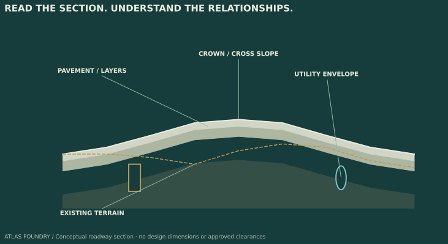

Conceptual study · not an approved engineering design Private engineering apps · Public showcase
Field & Signal Focused checks for the next project handoff.
Review companions for civil designers, CADD leads and GIS teams: organize exceptions, reconcile changes and leave a clear record for the next reviewer.
Explore 15 existing prototypes by Matthew Longoria, EIT. Most operate on exports from established design workflows. Public samples use synthetic data; each tool identifies its current validation status.
Matthew Longoria, EIT Master of Engineering · Civil Engineering Graduate Certificate · GIS
Find a tool
Workflow All workflows Civil 3D OpenRoads GIS CAD companions
Review task All tasks Data handoff Design review Quantity review Change review
Clear filters 15 tool prototypes
Expand visible tool details Print / save filtered shortlist Filter by workflow or review task, then save a focused PDF using your browser’s print dialog.
Civil 3D
Surface QA Surface handoff review
Screen exported surface triangles for slope, size and long-edge exceptions before another discipline uses the model.
Inputs, output & reviewer follow-up Input Surface triangle export and project review thresholds Output Flagged triangles for model-owner investigation Next review step Confirm breaklines, boundaries and survey intent in the native model. Core checks tested · native host pending
View sample report ↗ Civil 3D
Point Audit Survey-data intake
Find repeated point numbers, nearby XY pairs and blank descriptions before points are passed into a design workflow.
Inputs, output & reviewer follow-up Input Point identifiers, coordinates and descriptions Output A point-level exception list Next review step Confirm whether close points are intentional; this does not verify survey accuracy. Python core tested · CAD exporter pending
View sample report ↗ GIS
GIS Handoff Check Asset-data handoff
Screen identifiers, geometry and coordinate-system information before a layer is shared with the next reviewer.
Inputs, output & reviewer follow-up Input GIS layer and required-field settings Output A traceable findings report Next review step Resolve flagged records and verify the receiving team’s schema and CRS requirements. Core tested · QGIS runtime pending
View sample report ↗ OpenRoads
Drainage Review Drainage export review
Review pipe slopes, endpoint cover and asset information in normalized drainage exports.
Inputs, output & reviewer follow-up Input Normalized pipe and endpoint data Output Synthetic drainage-review example Next review step Confirm source elevations and cover assumptions; hydraulic capacity is outside this check. C# source prototype · native host pending
View sample report ↗ CAD companions
Profile Grade Review Profile review preparation
Identify steep segments in a sampled profile so a reviewer can focus on the relevant station ranges.
Inputs, output & reviewer follow-up Input Station/elevation CSV and selected grade limits Output Segment-level grade findings Next review step Review vertical curves and governing project criteria separately. CSV workflow tested · desktop mapping pending
View sample report ↗ CAD companions
Station Coverage Check Export completeness
Check station sequences for duplicates and gaps before relying on an exported sample set.
Inputs, output & reviewer follow-up Input Station CSV and expected sampling settings Output Coverage and duplicate-station findings Next review step Distinguish missing samples from deliberate changes in sample spacing. CSV workflow tested · desktop mapping pending
View sample report ↗ CAD companions
Section Earthwork Earthwork quantity review
Review average-end-area cut and fill calculations from exported cross-section areas.
Inputs, output & reviewer follow-up Input Stations, cut/fill areas and coordinate units Output Segment quantities and a calculation report Next review step Reconcile with native model quantities; material factors and payment rules need separate treatment. CSV workflow tested · desktop mapping pending
View sample report ↗ CAD companions
Utility Crossing Review Utility coordination
Flag vertical-envelope clearance issues at identified utility crossings for coordination follow-up.
Inputs, output & reviewer follow-up Input Crossing elevations, envelope dimensions and clearance settings Output Crossing-by-crossing review findings Next review step Verify utility records, conflict locations and project criteria; no automatic clash detection is implied. CSV workflow tested · desktop mapping pending
View sample report ↗ CAD companions
Quantity Reconciliation Quantity change review
Compare baseline and revised quantities to make changed items easier to discuss at a design review.
Inputs, output & reviewer follow-up Input Baseline and revised quantity tables Output Item-level quantity differences Next review step Confirm units, item mapping and reasons for change before updating estimates. CSV workflow tested · desktop mapping pending
View sample report ↗ CAD companions
Point Revision Compare Revision coordination
Compare point coordinates between revisions to identify movement requiring follow-up.
Inputs, output & reviewer follow-up Input Baseline and revised point tables Output Horizontal and vertical coordinate differences Next review step Confirm the same coordinate reference and point identity across revisions. CSV workflow tested · desktop mapping pending
View sample report ↗ OpenRoads
Template Drop Review Corridor review preparation
Review template names, changes and sample spacing in exported corridor records.
Inputs, output & reviewer follow-up Input Template-drop station and name CSV Output Template changes and spacing exceptions Next review step Inspect corridor behavior at transitions in OpenRoads. CSV workflow tested · native host pending
View sample report ↗ OpenRoads
Corridor Region Coverage Corridor completeness
Find interior station gaps and overlapping corridor-region ranges before a model handoff.
Inputs, output & reviewer follow-up Input Corridor region start/end station CSV Output Gap and overlap findings Next review step Check whether overlapping regions are intentional; expected outer limits are not inferred. CSV workflow tested · native host pending
View sample report ↗ OpenRoads
Cross-Slope Review Cross-section review
Compare signed outward slopes with project-selected review settings.
Inputs, output & reviewer follow-up Input Sampled cross-section slopes and units Output Slope exceptions by sample Next review step Verify sign convention and applicable project criteria; this is not an accessibility certification. CSV workflow tested · native host pending
View sample report ↗ OpenRoads
Feature Definition Audit CADD standards handoff
Compare exported feature and level names with a supplied project reference list.
Inputs, output & reviewer follow-up Input Feature/level export and expected names Output Naming exceptions for standards review Next review step Confirm the reference list with the CADD lead; no agency approval is implied. CSV workflow tested · native host pending
View sample report ↗ OpenRoads
Superelevation Transition Review Roadway transition review
Review slope magnitudes, sample gaps and transition rates in exported superelevation records.
Inputs, output & reviewer follow-up Input Station/slope CSV and review limits Output Transition-rate and sample findings Next review step Check full transition geometry and the governing roadway-design criteria in the native model. CSV workflow tested · native host pending
View sample report ↗ For teams / Evaluation & licensing inquiries
Start with one workflow. A useful evaluation begins with a defined export format, one review task and agreed acceptance checks. These prototypes are available to discuss, not offered as production-ready software.
1. Define the use case Identify the tool, native application/version, input schema, units and the report your reviewer needs.
2. Validate a small sample Use synthetic or approved de-identified data. Compare findings with a manual review and document unresolved limitations.
3. Discuss adoption If the workflow proves useful, discuss a scoped paid pilot, customization or licensing. Scope, price, support and permitted use would be agreed separately.
Prepare an evaluation inquiry Hiring for an engineering or GIS role? Contact Matthew ↗
Web apps / Try the current experience
Small workflows. Useful outputs. Fieldbook Capture observations, optional locations and photos; export CSV or GeoJSON for a GIS handoff.
Free device-local prototype. No shared team workspace or cloud backup.
Try Fieldbook ↗ Discuss a tailored workflow ↗ Trail Ledger Organize a multi-day walking itinerary, distances, overnight stops and notes in a browser.
Free personal planning tool. A focused example of practical interface design.
Open Trail Ledger ↗ Kiwami Reader A desktop Japanese listening companion with local transcription, rōmaji and vocabulary support.
Desktop prototype intended for free release; not a browser app.
See Kiwami Reader ↗ Public evidence. Private implementation. These examples use synthetic data. Full CAD/GIS source, installers and unreleased builds are not distributed by this website. Request a demonstration to discuss the workflow.
Most tools are export-based companions. Native CAD/GIS runtime testing remains pending where marked; a passing rule test is not a production certification. Public reports and browser demos are intentionally viewable and copyable.
Explore free apps and other projects ↗